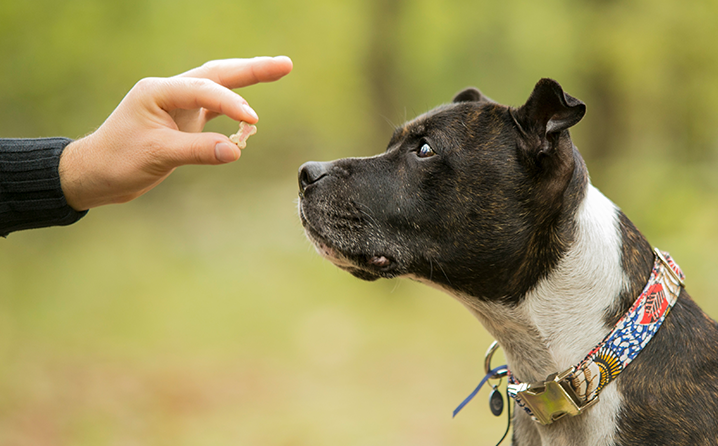

Bravecto 365: Proteção prolongada contra pulgas e carrapatos

O adestramento de cães é uma das práticas mais importantes para garantir uma convivência harmoniosa entre o animal e seu tutor, indo muito além de ensinar comandos básicos e truques. Trata-se de um processo de comunicação, aprendizado e construção de confiança, no qual o cão passa a compreender o que é esperado dele dentro do ambiente em que vive. Diferente do que muitos imaginam, adestrar não significa impor autoridade de forma rígida, mas sim educar com consistência, paciência e reforço positivo, criando uma relação saudável baseada no respeito mútuo. Quando bem aplicado, o adestramento contribui diretamente para o bem-estar do animal, reduzindo comportamentos indesejados e promovendo equilíbrio emocional.
Muitos problemas comportamentais, como latidos excessivos, destruição de objetos, ansiedade de separação e agressividade, podem ser evitados ou corrigidos com técnicas adequadas de adestramento. Isso acontece porque o cão passa a entender limites e rotinas, o que diminui sua insegurança e aumenta sua sensação de controle sobre o ambiente. Além disso, o treinamento estimula o raciocínio do animal, ajudando a gastar energia mental, o que é tão importante quanto o exercício físico para manter o pet saudável e equilibrado.
Quando começar o adestramento
Uma dúvida muito comum entre tutores é sobre o momento ideal para iniciar o adestramento, e a resposta é simples: quanto antes, melhor. Filhotes estão em uma fase de aprendizado intenso e absorvem estímulos com mais facilidade, o que torna esse período ideal para introduzir comandos básicos e socialização. No entanto, isso não significa que cães adultos não possam ser treinados. Com as técnicas corretas e consistência, é totalmente possível ensinar novos comportamentos em qualquer idade, respeitando o ritmo e as características individuais de cada animal.
Durante as primeiras fases da vida, o cão aprende principalmente por associação, ou seja, ele relaciona ações a consequências. Por isso, é fundamental que o tutor recompense comportamentos desejados imediatamente, para que o animal entenda claramente o que está sendo incentivado. Da mesma forma, comportamentos indesejados devem ser ignorados ou redirecionados, evitando punições que possam gerar medo ou insegurança.
Principais técnicas de adestramento
Existem diversas abordagens no adestramento de cães, mas a mais recomendada atualmente é o reforço positivo. Essa técnica consiste em recompensar o animal sempre que ele realiza um comportamento correto, utilizando petiscos, carinho, brinquedos ou elogios. Esse método fortalece a associação entre ação e recompensa, incentivando o cão a repetir aquele comportamento no futuro. Além de ser eficaz, o reforço positivo promove uma experiência agradável para o animal, tornando o aprendizado mais rápido e duradouro.
Outra técnica importante é a repetição associada à consistência. Os cães aprendem por meio de padrões, então é essencial que todos os membros da casa utilizem os mesmos comandos e regras, evitando confundir o animal. Sessões curtas de treinamento, realizadas diariamente, tendem a ser mais eficazes do que treinos longos e esporádicos, pois mantêm o cão engajado e evitam fadiga mental.
Comandos básicos essenciais
Alguns comandos são fundamentais para garantir a segurança e o controle do animal no dia a dia. Entre os principais estão “sentar”, “deitar”, “ficar” e “vir”, que ajudam a estabelecer limites e facilitam a convivência. Ensinar o cão a atender ao chamado, por exemplo, pode evitar situações de risco, como fugas ou acidentes em locais abertos. Esses comandos devem ser introduzidos de forma gradual, sempre com reforço positivo e em ambientes com poucos estímulos no início, aumentando a dificuldade conforme o animal evolui.
Além dos comandos básicos, é importante trabalhar o autocontrole do animal, ensinando-o a esperar, respeitar espaços e lidar com estímulos externos sem reagir de forma exagerada. Esse tipo de treinamento contribui significativamente para um comportamento mais equilibrado, especialmente em ambientes urbanos, onde há muitos estímulos simultâneos.
Importância da socialização
A socialização é uma etapa fundamental do adestramento, especialmente durante os primeiros meses de vida do cão. Expor o animal a diferentes pessoas, outros animais, sons e ambientes ajuda a reduzir o medo e a ansiedade diante de novas situações. Cães bem socializados tendem a ser mais confiantes, tranquilos e menos propensos a desenvolver comportamentos agressivos ou reativos.
No entanto, esse processo deve ser feito de forma gradual e positiva, respeitando o limite do animal. Forçar interações pode gerar o efeito contrário, aumentando o estresse e a insegurança. O ideal é permitir que o cão explore o ambiente no seu próprio ritmo, associando novas experiências a estímulos positivos.
Erros comuns no adestramento
Um dos erros mais comuns cometidos pelos tutores é a falta de consistência, onde regras mudam frequentemente ou não são seguidas por todos da casa. Isso confunde o animal e dificulta o aprendizado. Outro erro é utilizar punições físicas ou gritos, que podem gerar medo e prejudicar a relação de confiança entre o cão e o tutor. O adestramento deve ser sempre baseado em respeito e compreensão, nunca em intimidação.
Além disso, muitos tutores esperam resultados imediatos, esquecendo que o aprendizado é um processo gradual. Cada cão possui seu próprio ritmo, e a paciência é essencial para alcançar bons resultados. Celebrar pequenas conquistas ao longo do caminho é uma forma eficaz de manter a motivação tanto do tutor quanto do animal.
Conclusão
O adestramento de cães é uma ferramenta poderosa para melhorar a convivência, fortalecer o vínculo entre tutor e animal e garantir mais qualidade de vida para ambos. Ao investir tempo e dedicação nesse processo, é possível prevenir problemas comportamentais, promover equilíbrio emocional e criar um ambiente mais harmonioso. Independentemente da idade do cão, sempre é possível aprender e evoluir, desde que o treinamento seja feito com paciência, consistência e respeito.
Em um mundo onde os pets fazem cada vez mais parte da família, educar o animal de forma adequada não é apenas uma escolha, mas uma responsabilidade. Com as técnicas corretas e o acompanhamento profissional quando necessário, o adestramento se torna uma experiência enriquecedora, capaz de transformar completamente a relação entre o cão e seu tutor.